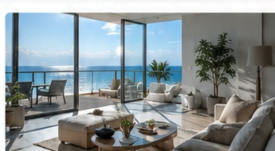

Gestão de Reservas
Gerimos reservas, calendários e disponibilidade.
PROPERTY MANAGEMENT • MADEIRA
Na StayMaximo, tratamos de toda a gestão do seu Alojamento Local para maximizar o rendimento do seu imóvel, com menos preocupações e total transparência.
Reservas, hóspedes, limpeza, manutenção e otimização de preços: cuidamos de cada detalhe.
GESTÃO SEM PREOCUPAÇÕES
Gerir um Alojamento Local exige tempo, disponibilidade e atenção constante.

OPERAÇÃO COMPLETA
Uma gestão integrada, profissional e orientada para o desempenho.
Gerimos reservas, calendários e disponibilidade.
Respondemos antes, durante e após a estadia.
Estratégias dinâmicas para equilibrar ocupação e rendimento.
Coordenação completa entre estadias.
Receção e saída organizadas.
Resposta rápida às necessidades do imóvel.
Informação organizada e transparente.
Tratamos do dia-a-dia para que não tenha de se preocupar.
TECNOLOGIA PRÓPRIA
Plataforma própria de gestão de alojamento local que centraliza propriedades, reservas, proprietários, hóspedes, equipas, limpezas e relatórios.
PROCESSO SIMPLES
Conte-nos sobre o seu imóvel.
Analisamos o potencial da propriedade.
Apresentamos uma solução adaptada.
Assumimos toda a operação.
Acompanhe tudo com transparência.
PORQUE ESCOLHER-NOS
Português • English • Español • Italiano
Software desenvolvido para a operação.
Ocupação, posicionamento e rentabilidade.
Acompanhe os resultados do seu imóvel.
Estratégia própria para cada propriedade.
Descubra o potencial do seu Alojamento Local.
Solicitar Avaliação Gratuita →CONFIANÇA
“A StayMaximo mudou completamente a forma como gerimos o nosso apartamento. Menos preocupações e total transparência.”— Miguel A. · Funchal
“Profissionais, disponíveis e sempre atentos. Deu-nos uma tranquilidade enorme.”— Carla S. · Ponta do Sol
“A tecnologia que utilizam e a forma como comunicam fazem toda a diferença.”— João P. · Machico
FAQ
Gerimos propriedades destinadas ao Alojamento Local e analisamos cada caso individualmente.
Não. A gestão diária fica ao cuidado da StayMaximo.
Receberá relatórios claros sobre o desempenho do imóvel.
Sim. Temos processos preparados para proprietários que vivem fora da ilha.
O valor depende do imóvel e dos serviços necessários. Após uma avaliação gratuita apresentamos uma proposta personalizada.
STAYMAXIMO MADEIRA
Deixe a operação connosco e tenha mais tranquilidade, organização e desempenho.